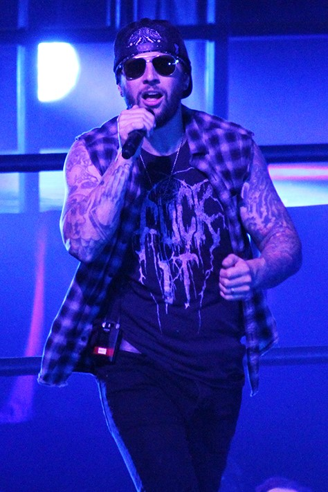
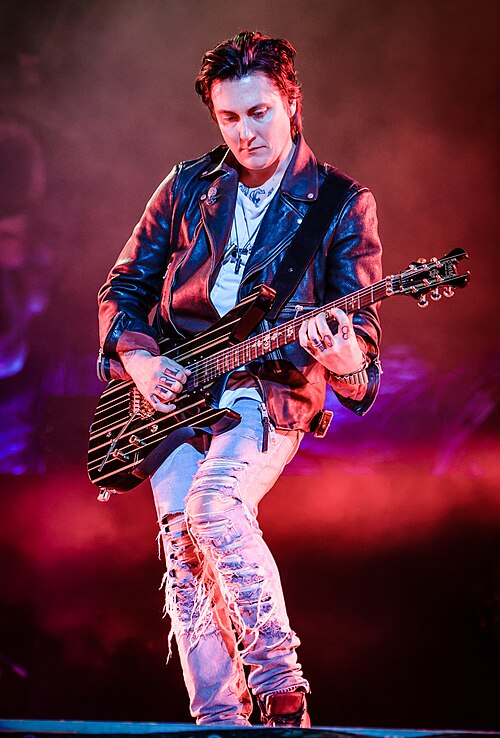
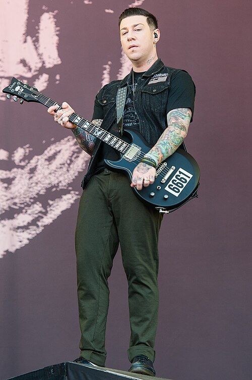
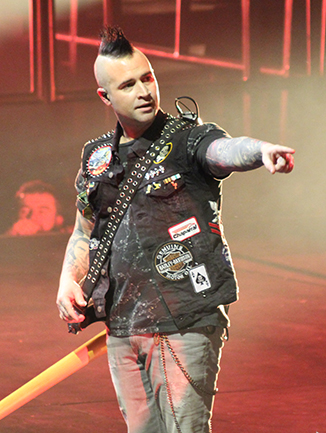
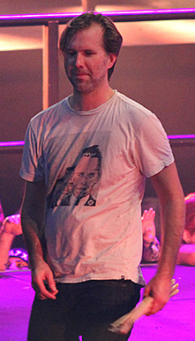
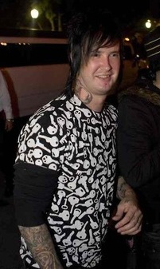

Band Members

Real Name: Matthew Charles Sanders
Role: Lead Vocals, Acoustic Guitar
He is the lead singer and one of the founders of the band. He has a unique rasp and vocal range.

Real Name: Brian Elwin Haner Jr.
Role: Lead Guitar, Backing Vocals
He joined the band in 2001 and is known for very fast and complex guitar solos.

Real Name: Zachary James Baker
Role: Rhythm Guitar, Backing Vocals
He plays left-handed guitar and came up with the band name and abbreviation A7X.

Real Name: Jonathan Lewis Seward
Role: Bass Guitar, Backing Vocals
He became the permanent bassist in 2002 and is the shortest member of the group.

Real Name: Brooks Wackerman
Role: Drums
He joined in 2015. Before joining A7X, he played drums for punk bands like Bad Religion.

Real Name: James Owen Sullivan
Role: Drums, Vocals, Piano
The founding drummer and a genius songwriter for the band. He sadly died in December 2009. The album Nightmare was written in his memory.